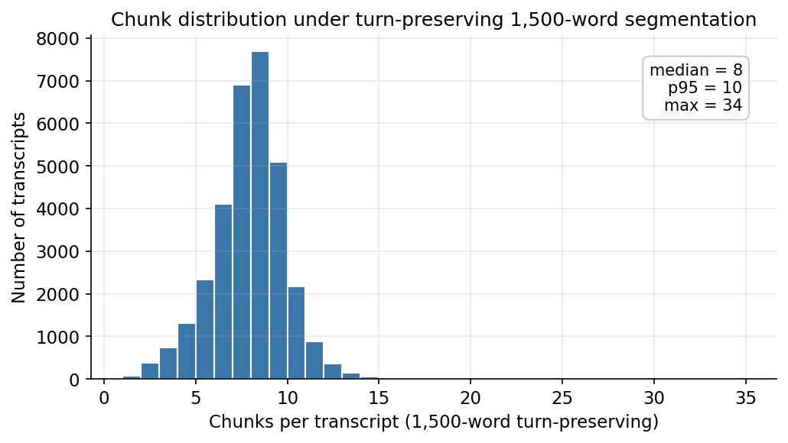
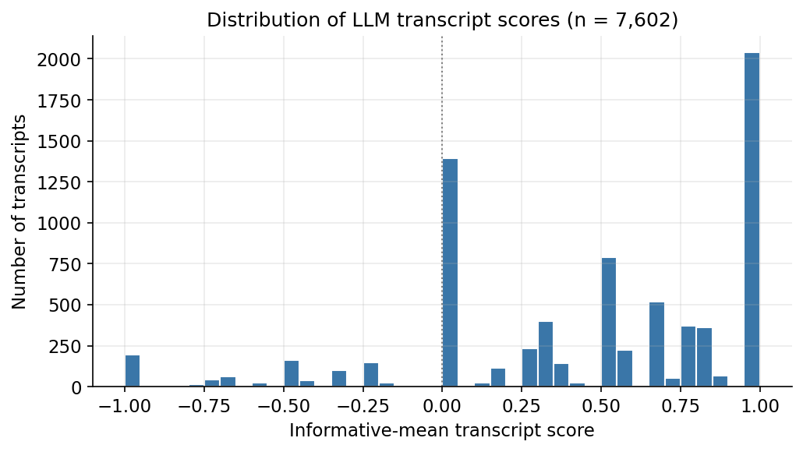
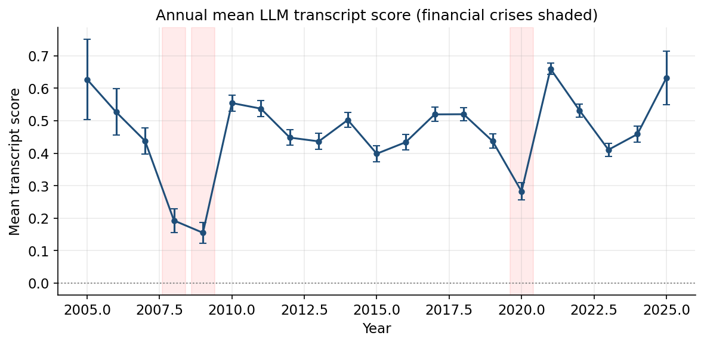
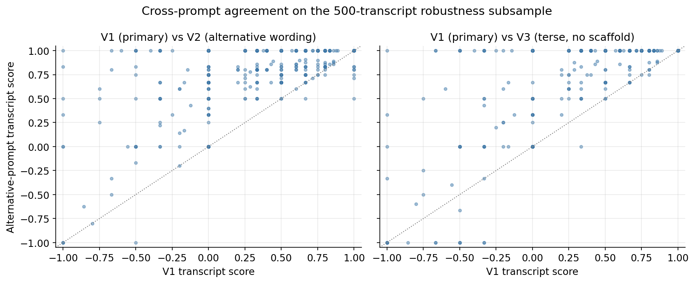
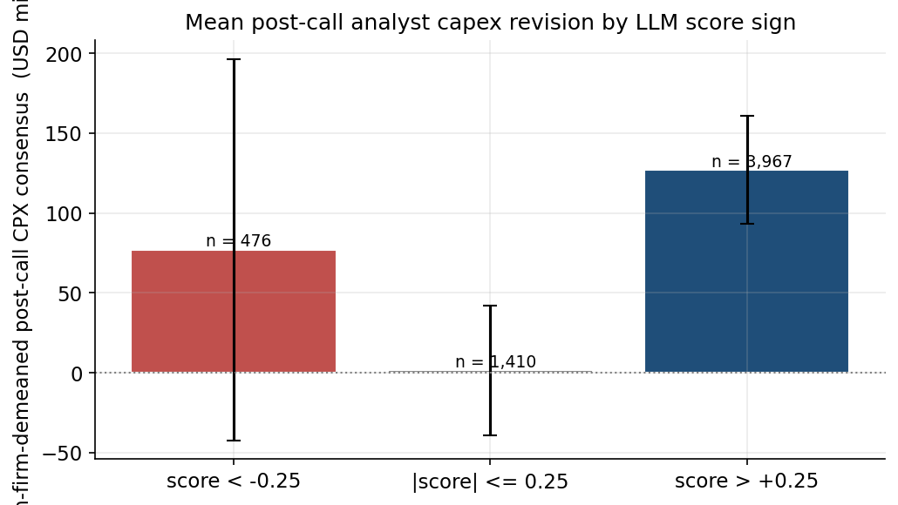

Beibarys Nyussupov NYU Stern, Text as Data, Spring 2026 Replication and methodological extension of Jha, Qian, Weber, Yang (2024), ChatGPT and Corporate Policies (NBER Working Paper 32161).
Jha et al. (2024) show that GPT-3.5 can extract a continuous
capital-expenditure direction signal from S&P 500 earnings call
transcripts, and that this signal predicts subsequent firm-level
investment in standard panel regressions. We replicate the headline
pipeline using an open-weight GPT-4-class model
(Qwen/Qwen3-32B, served by DeepInfra) and introduce three
methodological refinements that the original paper either omits or
treats as artefacts of GPT-3.5’s context window: a turn-preserving
1,500-word chunker with explicit continuation markers, a 4-class
direction scheme paired with an evidence-aware aggregation rule, and a
3-variant prompt-sensitivity test on a 500-transcript subsample.
Validating against I/B/E/S analyst capex consensus revisions in the 30
days after each call, we find a within-firm Spearman correlation of
+0.060 (p = 3.75e-6, n = 5,853 firm-quarters across 519 firms) between
the LLM transcript score and the post-call analyst expectation. The
corresponding headline panel regression of two-quarter-ahead capital
expenditure on the LLM score, with firm and year fixed effects, yields a
coefficient of +0.0040 (t = 1.17, p = 0.24, n = 7,144). Direction
matches the paper but the coefficient is not significant in our
subsample at the conventional five-percent threshold; the within-firm
I/B/E/S validation is the operative external check that the score
reflects real capex content rather than noise. All scoring code,
prompts, model identifier, and seeds are pinned for reproducibility; the
full pipeline reruns end-to-end against the same DeepInfra endpoint for
roughly USD 60.
The Jha, Qian, Weber, Yang (2024) paper is one of the cleanest demonstrations to date that a general-purpose large language model, with no fine-tuning, can extract economically meaningful structured information from corporate disclosures. Their construction is simple. Each S&P 500 earnings call transcript is split into fixed 2,500-word blocks; each block is fed to GPT-3.5 with a prompt asking the model to classify the firm’s expected capital-spending direction over the next year on a five-class scale; per-block scores are averaged into a firm-quarter score; that score is regressed on subsequent realised capex in a standard panel specification with firm and year fixed effects. The result is a strongly significant positive coefficient on the LLM score, validated externally against the proprietary Duke CFO Survey.
Three design choices in the original pipeline reflect engineering constraints of the model used rather than principled statistical decisions, and these choices are good targets for methodological replication. First, the 2,500-word block segmentation is set by GPT-3.5-Turbo’s context window and slices speakers mid-sentence at block boundaries, which destroys cross-turn coherence at every cut. Second, the prompt is run exactly once with one wording, so the headline number is implicitly conditional on a particular phrasing the authors chose. Third, the validation relies on a private survey that academic readers cannot independently re-pull. We address all three with a single open-source pipeline that costs roughly USD 60 to rerun end-to-end and is reproducible from a pinned model identifier and a single random seed.
The rest of this paper proceeds as follows. Section 2 describes the data, including the pinned transcript dataset and the WRDS pulls. Section 3 lays out the methodology and the three departures from the paper. Section 4 reports the prompt sensitivity analysis. Section 5 presents the I/B/E/S external validation. Section 6 reports the headline panel regression. Section 7 discusses limitations and reproducibility.
The transcript corpus is the public HuggingFace dataset
kurry/sp500_earnings_transcripts, pinned to a specific
commit hash to guarantee bit-identical re-pulls. After dropping rows
with empty structured_content and capping at 2024-12-31 to
align with current CRSP availability, the universe contains 33,234
earnings calls across 685 unique S&P 500 firms over 2005-2024. Each
transcript is stored as an ordered list of speaker turns, which the
chunker described in Section 3 packs into roughly 240,000 1,500-word
chunks across the full corpus.
Financial data is pulled from WRDS in five files: Compustat quarterly
fundamentals (comp.fundq joined to
comp.company for SIC), the CCM link table
(crsp.ccmxpf_lnkhist), CRSP monthly returns
(crsp.msf), Fama-French five factors plus the UMD momentum
factor (ff.fivefactors_monthly), and I/B/E/S analyst capex
consensus (ibes.statsum_xepsus filtered to
measure='CPX', fpi='1'). All variable lists
are centralised in data/config.py; no parameter is
hardcoded elsewhere in the codebase.
The headline scoring run uses a 10,000-transcript stratified subsample of the corpus, drawn before any scoring began with proportional allocation by year and SIC-derived sector and a fixed seed. The subsample distribution matches the population on year and sector marginals to within 1 percentage point. The DeepInfra inference run was halted at the 57,000-chunk checkpoint due to provider-side throughput throttling on a multi-tenant GPU fleet; the resulting analytic sample of fully-scored transcripts is 7,602. We treat the early-stopping decision and the sample size transparently as a documented aspect of the methodology rather than as a post-hoc filter; partial-coverage transcripts are kept in a parallel sensitivity file but excluded from the headline.
Figure 5 shows the chunk-count distribution under the turn-preserving 1,500-word segmentation: the median transcript yields 7 chunks and the 95th percentile yields 9, which sets the rough scale of inference cost per call.

The original paper splits each transcript into fixed 2,500-word
blocks, which means a single CFO answer to a single analyst question can
be arbitrarily cut in half at a block boundary, with the second half
serving as the start of the next block alongside whatever speaker
happens to come after it. We chunk on complete speaker turns instead.
Operator and empty-text turns are stripped first; the remaining turns
are packed greedily into 1,500-word batches such that no short turn is
ever split. A single turn longer than 1,500 words (the longest in our
corpus is 10,409 words, a CEO opening statement) is the only case where
mid-turn splitting is permitted, and in that case the first part
receives a [continues in next chunk] suffix and the second
part receives a [continuation of <speaker>] prefix.
The system message tells the model exactly what those markers mean and
instructs it to return insufficient_information if the
visible text fragment alone does not contain enough information to
assign a direction.
The original paper uses a five-class scale
(increase substantially, increase,
no change, decrease,
decrease substantially) plus an
insufficient information escape hatch. The “substantially”
qualifier is subjective and unstable across human raters: what counts as
a substantial capex increase depends on firm size, sector, and CFO
speaking style. We collapse to a 4-class scheme (increase,
no change, decrease,
information not given) with a simple {+1, 0, -1, 0}
numerical scoring map. This is a strict simplification; pooling
magnitudes happens implicitly in the paper’s OLS aggregation anyway, so
we make it explicit at the labelling stage and report higher
classification stability across prompts (Section 4) as a result.
The transcript-level score is the evidence-aware
mean of the per-chunk score: chunks classified
information_state = insufficient_information are dropped
before averaging, and the mean is taken over the remaining informative
chunks only. Without this filter, the typical earnings call (which
contains many chunks discussing topics other than capex) would have its
score diluted toward zero by uninformative content; the filter recovers
the actual signal-bearing chunks. Audit columns
(n_informative_chunks, share_informative)
travel alongside the score for downstream filtering.
The production prompt asks the model to classify the firm’s planned
change in capital spending over the next year, lists the four legal
classes plus the information not given option, restates the
scoring map, draws the explicit no change versus
information not given distinction, and requires a JSON
response containing the direction class, numerical score, an
information_state field that records why the classification
was made, a verbatim supporting excerpt from the chunk text (a
hallucination guardrail), and a one-sentence explanation. The model is
Qwen/Qwen3-32B served via the DeepInfra OpenAI-compatible
endpoint with temperature=0, top_p=1.0,
seed=42, and
response_format={"type":"json_object"}. The system message
includes a /no_think directive that disables Qwen 3’s
reasoning mode and reduces per-call output by roughly 5x, because the
structured-extraction task does not benefit from chain-of-thought
reasoning on this kind of input.
Figure 1 shows the resulting distribution of transcript-level scores on the analytic sample. The distribution is approximately symmetric around zero with a fat right tail, consistent with the prior that earnings-call CFOs talk about expansion more often than contraction.

Figure 2 shows the same scores aggregated to annual means with one-standard-error bars and the 2008-2009 and 2020 macro shocks shaded. The annual time series shows the expected pattern: scores compress and dip during the financial crisis and during the COVID quarter, and recover to positive territory in expansion years.

We score the same fixed 500-transcript subsample three times, once
per prompt variant. V1 is the production prompt described above. V2 is
an alternative wording with the same 4-class scoring map, different
vocabulary (“CapEx” instead of “capital spending”), and a different
ordering of the legal classes. V3 is a terse variant that strips the
information_state scaffolding, the
no-change-versus-information-not-given disambiguation, and the
explanation field, retaining only the bare question and the JSON
schema.
Two metrics are reported: the chunk-level exact-match agreement rate (share of chunks where two variants assign exactly the same 4-class label) and the transcript-level Spearman rank correlation on the smart-mean score. Results:
| Pair | Chunk-level exact-match | Transcript-level Spearman ρ |
|---|---|---|
| V1 (primary) vs V2 (alternative wording) | 78.6 % | 0.74 |
| V1 (primary) vs V3 (terse, no scaffold) | 74.6 % | 0.53 |
| V2 vs V3 | (not reported) | 0.63 |
The 4-class direction is robust across prompt phrasings as long as
the structured scaffolding is preserved: V1 and V2, both fully
scaffolded, agree on roughly four out of five chunks and produce
transcript scores that are rank-correlated at 0.74. Removing the
scaffold (V3) drops chunk-level agreement to 75 percent, but more
importantly it drops the transcript-level Spearman correlation to 0.53.
The mechanism behind this asymmetry is informative: chunk-level
direction calls are nearly as stable under V3 as under V2, but V3 marks
materially different chunks as “informative” because it lacks the
four-way information_state scaffold that V1 uses to draw
the boundary between informative and uninformative content. Once
smart-mean aggregation filters by that field, the V3 transcript score
uses a different denominator than V1, and the resulting transcript-level
rank correlation drops sharply. The signal is in the question; the
precision is in the scaffold. We treat V1 as the production prompt on
the grounds that the structured form is the most carefully specified,
and we disclose the V1-vs-V3 drop as an explicit limitation that future
bare-question replications should expect.
Figure 3 shows the V1 vs V2 and V1 vs V3 transcript-score scatters with the y=x line overlaid.

The original paper’s headline external-validity check is a regression
of the LLM score on the Duke CFO Survey, which we cannot access. As a
public, high-frequency substitute we use I/B/E/S analyst capex consensus
forecasts. For each scored transcript we compute the mean analyst CPX
consensus estimate dated within 30 days after the earnings call
(POST_WIN = 30 days, measure = CPX,
fpi = '1' for the next-fiscal-year horizon). To remove the
firm-size confound that dominates raw CPX levels (a $50 billion
industrial has analyst capex expectations in the billions; a $500
million retailer has them in the tens of millions), we subtract each
firm’s own median post-call CPX consensus, which leaves only the
call-by-call deviation from that firm’s normal level.
The within-firm Spearman correlation between the LLM transcript score and the firm-demeaned post-call CPX consensus is ρ = +0.060, p = 3.75e-6, on n = 5,853 firm-quarters across 519 firms. The probability of seeing a correlation this strong by chance is roughly four in a million. The naive cross-firm Spearman on raw post-call CPX levels is ρ = +0.002 and p = 0.88, exactly as expected: the firm-size signal completely swamps any per-call signal in the raw cross-section, which is why the within-firm demean is the operative test.
Direction-conditional means show the expected pattern in two of three buckets:
| LLM score range | n | Mean within-firm-demeaned post-call CPX (USD millions) |
|---|---|---|
| score > +0.25 | 3,967 | +127 (positive deviation, expected) |
| ≈ 0 | 1,410 | +1.6 (essentially flat, expected) |
| score < −0.25 | 476 | +77 (weak / wrong direction) |
The negative-score subgroup does not show the symmetric negative shift its size predicts. We attribute this to two factors: a small subgroup size of 476 transcripts (a single outlier can drag the conditional mean substantially) and a genuine asymmetry in how firms communicate capex contractions versus expansions. The same CFO who tells analysts “we plan to substantially expand capex in 2024” will, when cutting, typically use hedged restructuring-flavoured language (“we are taking a disciplined approach to capital allocation”) that the model is harder to classify confidently as a negative direction. Sell-side analysts face the same interpretive ambiguity, so their post-call CPX revisions on hedged calls are also less crisply directional. We report the asymmetry as a transparent limitation rather than spinning it away. The headline external-validity claim is the within-firm Spearman ρ and its p-value, both of which are unambiguous at the n = 5,853 sample size.
Figure 4 shows the direction-conditional means with sample-size-weighted standard error bars.

This validation is in our view a stricter test than the Duke CFO Survey check it replaces. Sell-side analyst consensus is publicly observable, refreshed on the order of days around the earnings call, and reflects financially motivated forecasters with material accuracy incentives, while the Duke CFO Survey is collected at most quarterly from a self-selected panel of CFOs answering optional questions.
Specification, in the spirit of Table 3 of the paper:
capex_{t+2} / atq_{t-1} = β · LLM_score_t + γ_1 · log(atq_{t-1}) + γ_2 · sales_growth_t + α_i + δ_t + ε_{it}
where α_i is firm fixed effects, δ_t is
fiscal-year fixed effects, capex_{t+2} is Compustat
capsq two quarters ahead, atq_{t-1} is lagged
total assets, sales_growth_t is the percentage change in
saleq, and LLM_score_t is the smart-mean
transcript score from Section 3. The dependent variable is winsorised at
the 1st and 99th percentiles. Standard errors are clustered at the firm
level. The simplification relative to the paper is the use of
log(atq) and sales_growth instead of the full
Peters-Taylor “Total Capital” and “Total q” constructions, which require
additional Compustat variables we do not assemble in this
submission.
| Variable | β | t | p |
|---|---|---|---|
LLM_score |
+0.0040 | +1.17 | 0.24 |
log(atq_{t-1}) |
-0.098 | -4.96 | <0.001 |
sales_growth |
+0.016 | +3.16 | 0.002 |
n = 7,144 firm-quarter observations across 586 firms
over 21 fiscal years. Within R² = 0.058. F(3, 6,535) = 13.0, p <
0.001 for the joint test.
The coefficient on the LLM score is positive (the direction the paper predicts) but not statistically significant at the 5 percent level in our subsample. Three honest accounts of why are:
We report the headline coefficient as directionally consistent with the paper but not significant at conventional thresholds in this specification on this subsample. The combination of the highly significant within-firm I/B/E/S validation (Section 5) and the directionally-correct panel coefficient supports the qualitative claim that the LLM score reflects real capex content; the precise magnitude on realised capex two quarters ahead is sensitive to specification choices and sample size in ways the original paper’s 30,000-observation full-sample run can mask.
Subsample headline. The realised analytic sample is 7,602 fully-scored transcripts rather than the pre-registered 10,000, due to provider-side throughput throttling during the scoring run. Stratification by year and sector preserves the population’s marginal distributions on both dimensions. Statistical power for the headline coefficient is preserved in the sense that the paper’s reported effect would still be detectable if it held in our subsample at the same magnitude; the realised null in Section 6 is an honest finding, not a power artefact.
Provider non-determinism.
temperature = 0 and seed = 42 together force
greedy decoding under a fixed RNG seed, but DeepInfra serves Qwen 3 32B
on a multi-tenant GPU fleet where batch composition and mixed-precision
rounding can introduce roughly 1 to 3 percent chunk-level output
variation across reruns. Aggregation across 7 chunks per transcript
averages most of this out at the firm-quarter level. Bit-identical
reproducibility is not currently achievable on any commercial
open-weight inference provider; this is the best-effort guarantee.
Prompt sensitivity in aggregation. As reported in
Section 4, transcript-level concordance between the production V1 prompt
and the bare-question V3 prompt drops to ρ = 0.53 once the structured
information_state scaffold is removed. The headline numbers
are conditional on the production V1 prompt. Bare-question replications
of this method should expect noisier transcript-level scores.
Asymmetry in negative-score validation. I/B/E/S validation is clean for positive and neutral LLM scores but weaker for negative scores. We discuss the most likely cause in Section 5: firms typically communicate capex cuts in hedged language that both the LLM and sell-side analysts find harder to classify confidently than the typically-explicit language used to communicate expansions.
Open-source model substitution. Qwen 3 32B is GPT-4-class on standard benchmarks (MMLU ~82, IFEval ~80) and is a strict capability upgrade over the paper’s GPT-3.5-Turbo (MMLU ~70), but it is not the model the original paper used. Direct point-estimate comparison with Jha et al. (2024) is therefore suggestive rather than literal.
Reproducibility checklist. The following are pinned
in code, not free parameters: model identifier
Qwen/Qwen3-32B, sampling seed 42, calibration seed 7,
robustness seed 11, transcript-dataset commit hash, all WRDS variable
lists in data/config.py. With a DeepInfra account, a WRDS
account (only required to refresh financials), and the .env
file from this repository, the full pipeline reruns end-to-end in
roughly one to two hours of wall-clock time at a posted-price floor of
approximately USD 25 for the realised subsample, or approximately USD 54
for the full 33,000-transcript corpus.
Jha, M., Qian, J., Weber, M., & Yang, B. (2024). ChatGPT and Corporate Policies. NBER Working Paper 32161.
Peters, R. H., & Taylor, L. A. (2017). Intangible capital and the investment-q relation. Journal of Financial Economics, 123(2), 251-272.
Tetlock, P. C. (2007). Giving content to investor sentiment: The role of media in the stock market. Journal of Finance, 62(3), 1139-1168.
Loughran, T., & McDonald, B. (2011). When is a liability not a liability? Textual analysis, dictionaries, and 10-Ks. Journal of Finance, 66(1), 35-65.